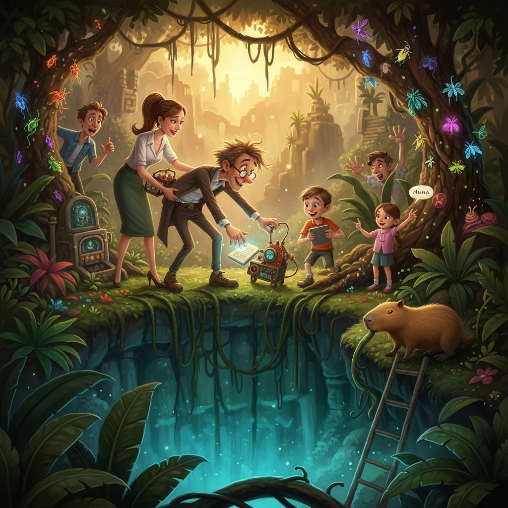

# Дыхание Затерянного Блокнота, или Как Полетайкины Спустились в Расселину и Обнаружили Там Кое-Что Похуже Духов
Семья Полетайкиных двигалась по джунглям Амазонии примерно с той же грацией, с какой холодильник движется по эскалатору: громко, непредсказуемо и с постоянным ощущением, что вот-вот что-то пойдёт не так.
Впереди шагал профессор Эразм Полетайкин — в панаме набекрень, с рюкзаком, из которого торчало что-то, похожее на антенну от советского телевизора, и с блокнотом, зажатым под мышкой так крепко, словно это был сам Архимед с папирусом. Эразм бормотал себе под нос, периодически останавливался, что-то чиркал в блокноте и поднимал к небу прибор, напоминавший скрещенный металлодетектор с настольной лампой.
— Вибро-Локатор Чудес фиксирует необычный энергетический фон! — объявил он торжественно.
— Эразм, — спокойно отозвалась идущая следом Виктория, не отрываясь от маленького термоса, — это мой чай. Ты держишь прибор над моим чаем.
— А! — профессор опустил локатор и с достоинством произнёс: — Тем не менее показания впечатляющие.
Арсений, двенадцатилетний, деловито шёл с планшетом наперевес, тыча в экран стилусом. Он уже успел взломать систему навигации местного туристического приложения — не из злого умысла, а «для оптимизации маршрута» — и теперь у них была карта, которой позавидовал бы любой картограф. Правда, на ней появились пометки вроде «здесь скучно» и «вот тут папа упадёт».
Мила бежала где-то сбоку от тропы, периодически ныряя в кусты и выныривая с очередным трофеем.
— Мааам! Это редкий вид навозного жука или просто навозный жук?
— Положи обратно, пожалуйста, — попросила Виктория с интонацией человека, который произносит эту фразу в двадцать седьмой раз за утро.
Замыкал процессию Бублик. Капибара весом под пятьдесят килограммов передвигалась с царственной медлительностью, периодически останавливаясь, чтобы задумчиво погрызть очередную ветку. На спине у него покачивался небольшой рюкзачок с запасными батарейками для профессора — единственная должность, с которой Бублик справлялся безупречно, поскольку она не требовала никакой инициативы.
Воздух пах влажной землёй, орхидеями и тем особым джунглевым духом, в котором смешиваются цветы, листва и что-то такое древнее, что слов для этого ещё не придумали. Виктория на ходу делала пометки в своём идеально ровном блокноте — она учуяла что-то интересное в горном воздухе, нечто травяное, с лёгкой горчинкой и нотой, которую она пока не могла идентифицировать. Возможно, новый сорт.
Всё шло по семейному плану Полетайкиных. То есть — нормально ровно до той секунды, пока что-нибудь не случится.
---
Синяя орхидея была совершенно невозможного цвета — такого, который обычно существует только в мечтах и на обложках научно-популярных журналов. Она свешивалась с отвесной скалы над тропой, и профессор Эразм остановился как вкопанный.
— Подождите, — прошептал он благоговейно.
— Папа, у тебя расстёгнут рюкзак, — сказал Арсений, не отрываясь от планшета.
— Тихо! Я фиксирую вибрации! — Эразм воздел Локатор Чудес к орхидее и шагнул ближе, споткнулся о корень лианы, который возлежал поперёк тропы с наглостью самого старого жителя этого леса — и, взмахнув обеими руками, с изящностью падающей антенны полетел вперёд.
Вибро-Локатор Чудес описал красивую дугу и скрылся в заросшей расселине справа от тропы с негромким «плюх».
Блокнот последовал за ним — с тихим «шорх» — и тоже исчез в зелёной тьме.
Повисла тишина. Эразм сидел на тропе, потирая колено и глядя в расселину с выражением человека, который только что посмотрел, как тонет его паспорт.
— Там... там все схемы, — сказал он тихо. — Принцип работы телепортатора. Чертежи нового тостера с голосовым управлением. И... и рецепт маминых пирожков, который я наконец записал.
— Эразм, — Виктория присела рядом и потрогала его лоб профессиональным жестом дегустатора, проверяющего температуру заварки, — ты жив?
— Жив. Но без блокнота — это философский вопрос.
Двое местных проводников, до этого молчаливо сопровождавших экспедицию, переглянулись. Старший — плечистый мужчина с длинным именем, которое семья Полетайкиных на третий день сократила до «дядя Хуан», — медленно покачал головой.
— Это место, — произнёс он с расстановкой, — называется «Дыхание Затерянного Мира». Туда нельзя. Там духи. Они забирают вещи. Иногда — людей.
— Они взяли мой блокнот, — мрачно подтвердил Эразм. — Я требую возврата.
Дядя Хуан и его напарник отступили на три шага назад с такой синхронностью, будто репетировали.
— Мы подождём здесь, — сообщил дядя Хуан. — Долго ждём. Если хотите.
Мила заглянула в расселину, потом посмотрела на родителей с блеском в глазах, который не сулил ничего тихого.
— Там кто-то есть, — сказала она уверенно. — Я слышу.
— Духи? — уточнил Арсений без особого энтузиазма.
— Нет. Что-то живое. Крупное. И ещё — там пахнет странно.
Виктория подняла голову и потянула носом воздух из расселины. Глаза её чуть прищурились.
— Трава... Что-то цветущее... И — да, есть что-то ещё. Металлическое. Совсем не природное.
Полетайкины переглянулись.
— Ну, — сказал Эразм, вставая и отряхивая колено с видом Колумба, принявшего решение плыть на запад, — кто-нибудь взял верёвку?
---
Арсений взял верёвку. Арсений взял верёвку, карабины, налобный фонарь, запасной налобный фонарь и небольшой портативный дрон — «просто на всякий случай», как он пояснил, хотя все прекрасно понимали, что «всякий случай» наступает каждый раз, когда Полетайкины куда-нибудь идут.
Расселина оказалась не такой глубокой, как выглядела снаружи — метра четыре, не больше, — но густо заросшей, влажной и наполненной таким количеством жизни, что у Милы немедленно разбежались глаза. Папоротники здесь были размером с зонт, цветы светились белым в зелёном полумраке, а откуда-то снизу доносился мерный шум — похожий на очень тихое урчание.
— Арсений, запускай дрон, — скомандовала Виктория, пока Эразм уже прилаживал к скале верёвку с такой сосредоточенностью, что только чудом не привязал к ней собственный ремень.
Дрон нырнул в расселину, и на экране планшета появилась картинка: мох, камни, упавшее дерево, заваленное орхидеями, — и среди всего этого великолепия — знакомый блокнот в клетчатой обложке, придавленный ветками.
— Вижу! — Эразм ткнул пальцем в экран. — И Локатор рядом! Вот он, голубчик!
— Папа, — Арсений медленно повернул планшет, — ты видишь вот это?
Рядом с блокнотом дрон зафиксировал нечто совершенно неожиданное: большой металлический ящик, обросший мхом, с облупившейся надписью на боку. Из ящика торчали трубки. Одна из трубок периодически выдыхала пар.
— Это... — начал Эразм.
— Это и есть «Дыхание Затерянного Мира», — заключила Виктория. — Дядя Хуан, вероятно, никогда не видел парового клапана.
Спускались по одному. Первым — Арсений, который обследовал почву на предмет устойчивости с видом сапёра. Следом — Мила, которую останавливать было бессмысленно. Потом Виктория, спустившаяся чисто и аккуратно, как будто делала это каждый четверг. Последним — Эразм, который умудрился зацепиться панамой за ветку, провисеть три секунды в воздухе и приземлиться с возгласом «Превосходно!».
Бублик посмотрел в расселину. Потом посмотрел на оставшихся проводников. Потом медленно, без лишних эмоций, начал спускаться сам, хватаясь за корни с достоинством, которое делало процесс совершенно естественным.
Внизу оказалось даже красиво — мягкий зелёный свет, запах влажного камня, орхидеи всех мыслимых расцветок. Виктория достала блокнот и уже занесла ручку.
Блокнот Эразма лежал там, где и показал дрон. Профессор подхватил его с нежностью отца, воссоединившегося с чадом, и прижал к груди.
— Вибро-Локатор! — радостно провозгласил он, подбирая прибор. — Цел!
Прибор в знак приветствия издал тихий «пип» и показал показание «9999». Что это означало — не знал никто, включая автора.
— Что в ящике? — спросила Мила, уже стоя рядом с металлическим монстром.
Арсений присел перед ним, достал маленький фонарик и осмотрел надпись. Соскрёб мох.
— «Café Express 3000», — прочитал он вслух. — Серийный номер... — пауза, — ... 1987 год выпуска.
Семья уставилась на ящик.
— Это кофемашина, — сказала Виктория.
— В джунглях, — сказал Арсений.
— В «Дыхании Затерянного Мира», — добавила Мила.
— Она работает, — заметил Эразм, ткнув пальцем в трубку, из которой выпорхнул очередной клуб пара.
Молчание длилось секунд десять. Это было то особое, насыщенное молчание, которое бывает, когда реальность оказывается настолько нелепее любой выдуманной версии, что мозг просто берёт паузу.
Бублик подошёл к кофемашине, понюхал её, подумал — и начал методично грызть трубку с паром. Из трубки немедленно вырвалось что-то, напоминавшее очень крепкий эспрессо, и окатило всех тёплым кофейным туманом.
Виктория закрыла глаза.
Открыла.
Облизнула губы.
— Невероятно, — произнесла она медленно. — Это... горький, с лёгкой кислинкой, с нотами дикого перца и... — она снова облизнула губы, — ...и что-то цветочное. Это необработанный зерновой дистиллят из местных сортов. Сорок лет в условиях влажного климата. Это — открытие.
— Кофемашина открытие? — переспросил Арсений.
— Кофейный пар — открытие, — поправила Виктория с таким лицом, с каким учёные смотрят на нобелевские премии.
Эразм тем временем уже обходил машину кругом с блокнотом наготове.
— Паровой клапан с ферментированным конденсатом! — бормотал он, чиркая схемы. — Если встроить этот принцип в новый тостер...
— Папа, пожалуйста, не надо тостер с кофейным паром, — попросил Арсений.
— Почему?
— Потому что в прошлый раз тостер с «функцией чтения мыслей» поджёг мне брови.
— Тогда была другая конфигурация, — отмахнулся Эразм и продолжил чиркать.
Мила тем временем прошла чуть дальше по расселине и вернулась с горстью листьев, которые протянула маме.
— Вот это и пахнет странно. Я видела, как здесь жевал тапир. Он был очень довольный.
Виктория взяла листья, растёрла между пальцами, понюхала. Лицо её стало задумчивым.
— Это не чай. Но... настой из этого будет интересным.
---
Наверх поднимались уже без суеты — дружно, поочерёдно, с трофеями. Эразм нёс блокнот и Локатор. Виктория — образцы листьев и запасную пробирку с кофейным конденсатом. Арсений — дрон и видеозапись всего происходящего. Мила — нового знакомого: небольшого зелёного лягушонка, которого она успела назвать Менделеем, хотя уже договорилась отпустить его на месте.
Бублик поднялся последним, неся в зубах ветку. Просто ветку. На всякий случай.
Дядя Хуан встретил их с видом человека, не ожидавшего никого встретить.
— Духи? — осторожно спросил он.
— Кофемашина, — ответил Арсений.
Дядя Хуан долго молчал.
— Это... хуже, — наконец решил он.
---
Вечером у лагерного костра Виктория заварила настой из листьев Милы. Получилось что-то горьковатое, слегка мятное, с неожиданным послевкусием свежего дождя. Они пили молча, и это было то редкое молчание, которое не нужно заполнять.
— Я назову его «Горный туман номер один», — сообщила Виктория.
— А я назову новый гаджет «Кофейно-паровой концентратор вибраций», — сообщил Эразм.
— Это одно и то же устройство? — уточнил Арсений.
— Пока не знаю. Это самое интересное.
Мила смотрела, как Менделей прыгает в траву и растворяется в темноте. Потом посмотрела на небо, где сквозь листья проглядывали крупные южноамериканские звёзды.
— Мы молодцы, — сказала она просто.
— Да, — согласилась Виктория и, поймав взгляд мужа, добавила тихо: — Даже несмотря на то что кто-то уронил блокнот.
— Я его нашёл, — парировал Эразм с достоинством.
— Ты его уронил.
— Нашёл же.
Бублик жевал ветку и смотрел на них всех с невозмутимостью существа, которое давно поняло: с этой семьёй скучно не бывает. И именно поэтому он никуда и не уходит.
← Все рассказы